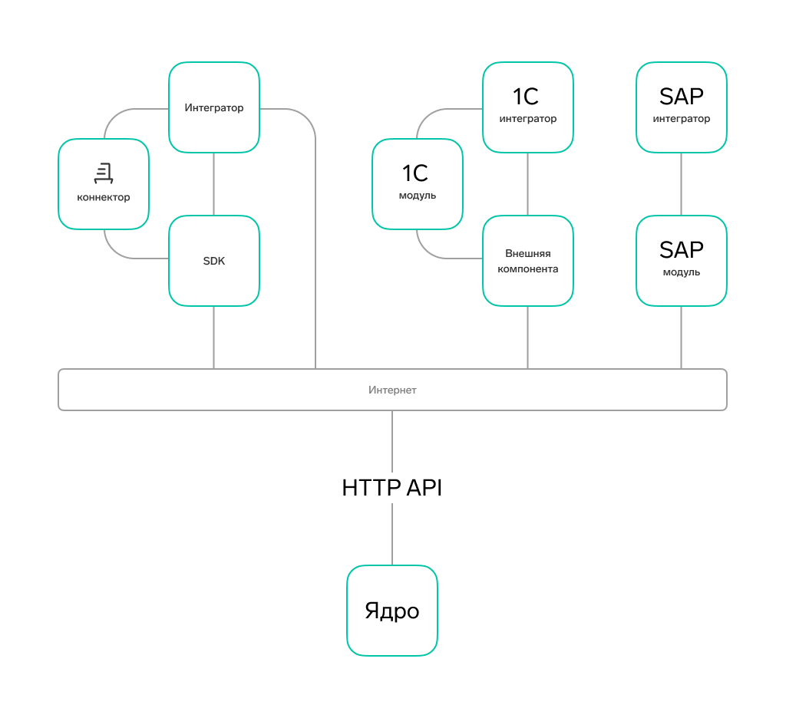

Возможности для интеграции¶
Выбор способа работы с API Диадок зависит от решаемых задач, требований к клиентской части и доступных средств разработки.
HTTP API¶
Базовый уровень интеграции — HTTP API. На этом уровне строятся платформо-независимые интеграционные решения. Это значит, что с HTTP API могут работать клиентские приложения, которые написаны на разных языках программирования и запускаются под разными операционными системами.
Готовые интеграционные решения¶
Клиентские приложения могут обращаться напрямую к HTTP API Диадока, а могут использовать одно из готовых решений:
Диадок.Коннектор — облачное решение, которое интегрирует Диадок с учетной системой. Подойдет компаниям со сложными бизнес-процессами и большим объемом документооборота.
SDK Диадока — набор готовых инструментов для разработки клиентских приложений. Он включает в себя решения на языках:
C# — представляет собой исходный код библиотеки .NET/COM, которая предназначена для клиентских приложений на технологиях Microsoft
C++ — представляет собой исходный код внешней компоненты
1С модуль — решает задачи стыковки 1С-решений с Диадоком.
Внешняя компонента — библиотека для 1С модулей. Написана на языке C++ и не содержит лишних зависимостей, поэтому работает на любой Windows-системе без установки дополнительных модулей.
SAP модуль — комплекс Контур-ERP для SAP. Обеспечивает бесшовную интеграцию SAP ERP с Диадоком.